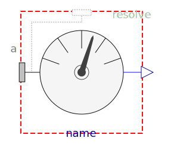
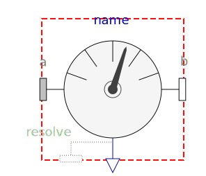

Sensors to measure variables
| Name | Description |
|---|---|
|  AbsoluteSensor | Obsolete model. Use instead Modelica.Mechanics.MultiBody.Sensors.AbsoluteSensor |
|  RelativeSensor | Obsolete model. Use instead Modelica.Mechanics.MultiBody.Sensors.RelativeSensor |
|
|
Obsolete model. Use instead Modelica.Mechanics.MultiBody.Sensors.CutForceAndTorque |